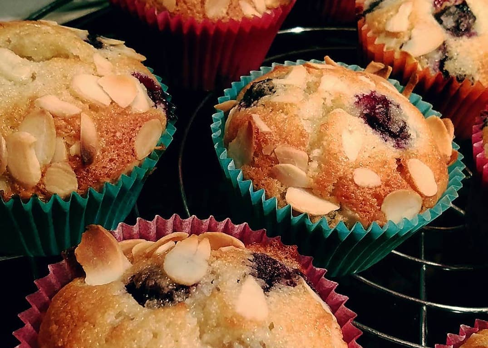

How to make a Scala cake
For experienced Java bakers
Presentation by Samuel Durand (github.com/samudurand)
Why switch to Scala ?
- Type safety
- Type inference
- Powerful compiler
- Utilities
- OOP + FP
- Unique patterns
- Much more concise
- Java compatible

Java to Scala basics
Defining a simple class
Java
public class Cake {
private name;
public Cake(String name) {
this.name = name;
}
public String getName() {
return name;
}
public void setName(String name) {
this.name = name;
}
}
Cake brownie = new Cake("Brownie");
Scala
case class Cake(name: String)
val brownie = Cake("Brownie")
Collections
Java
List<Cake> cakes = new LinkedList<>();
List<Cake> cakes = Arrays.asList(new Cake("Brownie"), new Cake("Blondie"));
Scala
val cakes = List[Cake]()
val cakes = List(Cake("Brownie"), Cake("Blondie"))
val cakes_list_as_java = cakes.asJava
Functions and loops
Java
public List<Slice> pickASliceFromEach(List<Cake> cakes) {
List<Slice> slices = new ArrayList<Slice>();
for (Cake c: cakes) {
slices.add(c.takeOneSlice());
}
return slices;
}
Scala
def pickASliceFromEach(cakes: List[Cake]) = cakes.map(_.takeOneSlice())
def pickASliceFromEachV2(cakes: List[Cake]) = for(cake <- cakes) yield cake.takeOneSlice()
OOP to FP + OOP
- Yes scala is a FP language...
- Functions as first class citizens
- Immutability: no change, but copy
- No side effects
- .map , .filter...
- Recursion instead of loops
OOP to FP + OOP
- ... but it also has OOP !
- Java Objects
- Classes, methods, properties
- This reference
- Inheritance
- Polymorphisme (Traits)
Rely on type inference
val cakeName = "Brownie" // String
val cakeCount = 5 * 3 - 4 // Int
val sliceSize = 5.35 // Double
val cakes = List(Pie("Pecan pie", sweetness=5), Cupcake("Muffin", sweetness=10)) // List[Cake]
def makeCake(name: String, sugarAmount: Double) = { // return type is Cake
val sweetness = (sugarAmount / 5).toInt
Cake(name, sweetness)
}
More advanced inferences
// Infer the type of T and the return type based on the List type
def getRandomSweet[T](sweets: List[T]) = sweets(rand.nextInt(sweets.length))
// --> return type T
val myFutureCakes = shopCakes.map(_.reverseEngineerRecipe().map(_.bakeCake()))
// --> return type List[Future[Future[Cake]]]
Prefer Immutability
Java
Cake creamCake = new Cake("Cream cake")
List cakes = new ArrayList();
cakes.add(creamCake)
cakes.remove(creamCake)
Scala
val panettone = new Cake("Panettone")
val cakes = List(panettone)
val cakesWithMuffin = Cake("Muffin") :: cakes
val cakesWithoutMuffin = cakesWithMuffin.filter(_.name != "Muffin")
Make your variables immutable, unless there’s a good reason not to.
Enjoy the Utilities
Strings: 100+ manipulation methods
val cakeStr = "madeleine"
cakeStr.reverse() // "enieledam"
cakeStr.toUpperCase() // "MADELEINE"
cakeStr.replaceAll("e", "a") // "madalaina"
Collections: 40+ list manipulation methods
val aLotOfBiscuits = List.fill(10)("biscuit")
aLotOfBiscuits.head // "biscuit"
aLotOfBiscuits.tail // "biscuit"
aLotOfBiscuits.reverse
Use Options instead of Nulls
Cake pecanPie = new Cake("Pecan pie", slices=2)
Slice slice1 = pecanPie.takeASlice()
Slice slice2 = pecanPie.takeASlice()
Slice slice3 = pecanPie.takeASlice() // = Null since there is no slice left
slice3.eat() // Runtime Null pointer exception
Scala
val pecanPie = Cake("Pecan pie", slices=2)
val (slice1, pecanPie2) = pecanPie.takeASlice() // Tuple[Option[Slice], Cake]
val (_, pecanPie3) = pecanPie2.takeAslice()
val (slice3, _) = pecanPie3.takeAslice()
slice3.eat() // Compiler error !
slice3.map {
case Some(slice) => slice.eat()
case None => println("I am still hungry !")
}
Traits
trait Cake {
val goodForDays = 3
val name: String
val slices: Int
def takeASlice(): Cake
override def toString() = s"A yummy ${name}, with ${slices} slices"
}
trait Pie {
val weight: Int
val sliceWeight: Int
}
case class LayeredCake(name: String, slices: Int, layers: Int = 3) extends Cake {
def takeASlice() = this.copy(slices=slices-1)
}
case class PecanPie(name: String,
slices: Int,
weight: Int,
sliceWeight: Int) extends Cake with Pie {
def takeASlice() = this.copy(slices=slices-1, weight=weight-sliceWeight)
}
Use pattern matching
def findOutWhatItIs(mysteryValue: Any) =
mysteryValue match {
case "Lemon pie" => println("Hurray ! A lemon pie !!")
case cakeName: String => println(s"Found it, it's a ${cakeName}")
case sliceCount: Int if sliceCount > 10 => println("It's gonna be a huge cake !!")
case sliceCount: Int => println("Only a small cake...")
}
def findOutWhatSweetItIs(mysteryCake: Sweet) =
mysteryCake match {
case p: Pie => println("It's not lemon but it's still a pie !")
case LayeredCake(_, _, layers) => println(s"It has ${layers} layers")
case _: Cake => println("I don't know which, but it is a cake")
}